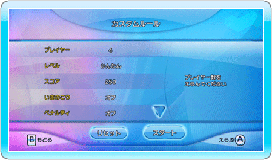

12 |
「カスタムルール」 |
 |
 「カスタムルール」メニューは「フリープレイ」「マルチプレイ」モードで開きます。矢印の アイコンを使ってルールをスクロールし、UNO™の 試合をカスタマイズしましょう。 ・「プレイヤー」 ゲームをプレイする人数を4人、または6人から 選択します。 ・「レベル」 「かんたん」、「ふつう」、「むずかしい」の 中から難易度を選択します。 ・「スコア」 スコアを「250」、「500」、「1000」の中から 選択します。 ・「いきのこり」 オン：誰かが上がった時点で1ゲームが終了し、他のプレイヤーはペナルティとして手持ちのカードに 応じてスコアにポイントが加算されます。 ポイントが設定したスコア「しっかくスコア」に 達したプレイヤーは、その時点で失格となり次の ラウンドに残ることができません。こうして、最後の1人になるまでゲームを繰り返します。 オフ：一番最初に上がった人だけに、他の プレイヤーの手持ちのカードに応じてスコアに ポイントが加算されます。最初にスコアが 「目標スコア」に達したプレイヤーが勝ちと なります。 ・「ペナルティ」 前のプレイヤーがドロー２またはワイルド ドロー４を出した場合、同じカードを持って いれば、そのカードを出すことでペナルティを回避することができます。ただし、その次の プレイヤーは2倍のペナルティを受けることと なります。そのプレイヤーも同じカードを所持している場合、効果はさらに次のプレイヤーに 引き継がれることとなります。このルールはオン、オフを切り替えることができます。 ・「ドロータイプ」 ここでは、下記の3種類のドロータイプから選択する ことができます。 １）カードを1枚引いて、捨てることのできるカードなら、そのまま場に捨てることができます。 ２）カードを引いた後、場にカードを捨てることができません。 ３）場に捨てることのできるカードを引くまで、カードを引き続けます。 ・「きょうせい」 オン：捨てることのできるカードがあれば、それを必ず捨てなければなりません。 オフ：捨てることのできるカードがあれば、それを捨てるか、カードを引くかのいずれかを選ぶことができます。 ・「UNO™ 7-0」 このルールがオンの時、「0」のカードが捨てられる度に、各プレイヤーは全ての手札を次の プレイヤーに渡さなければなりません。 そして「7」のカードが捨てられる度に、出した プレイヤーは任意のプレイヤーを選んで、手札を 交換しなければいけません。 ・「ジャンプ」 このルールがオンの時、場の一番上にあるカードと全く同じカードが手札にある場合、自分の番でなくてもそのカードを場に出すことができるようになります。 ・「チャレンジ」 このルールがオンの時、ワイルドドロー4に対して プレイヤーがチャレンジを選択できるように なります。 ・「リセット」 ゲームのルールを初期の設定状態に戻します。 ・「スタート」 ルールを適用して、ゲームを開始します。 |
 |
 |
 |